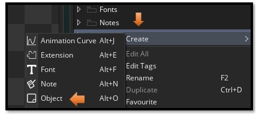
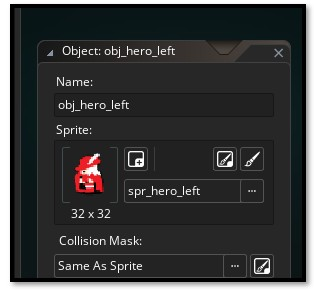
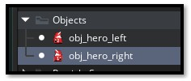

~Preparing Hero for Room~
1/26/2026

Well, last week, you saw how we can bring our floor in, first we create the sprite, then turn that into the tile set. This week we will prepare the hero to bring him into the room.
In our first tutorial for this series, we create a sprite, and yes, we could use that pitiful one for our game, but…

Yes, this little critter does make a pretty bad hero. Let’s instead bring in this little guy from final fantasy, the red mage. I have a right and left facing little hero here. At the 32 x 32 size he is little, but it is a good size for the game.

Bring your Sprite into your sprite folder, from windows explorer and outside of your game. Find your folder here. Move your hero sprites in.w
C:\Users\User-Name\GameMakerProjects

Now you need to bring this sprite into the Game. You must also bring it into the game, because game maker will create its own stuff that is needed to be used in the game.
Go to the Asset Browser, on the right side of the app. Go down the list until you find the sprite folder. Right click on the Sprite folder.
Create – Sprite

You will want to hit the import button here to import the sprite you added to your folder. After importing, you will see the sprite listed in this section. Make sure you give your sprite a name. Here we named it spr_hero_left

You want to do the exact same thing you did for the left facing hero, but this time bring in the Right facing hero.

To sharpen the image
At this small size it can be sharpened a bit, unfortunately like a lot of Game Maker stuff, the steps you have to take to find it is extensive.
Look on the right side of your app. Where your Asset Browser is. You will find that 3- line hamburger menu. You want to click that menu.

Select Game Options.

To move to the correct panel, you must actually click directly on the word Windows here.

Click on Graphic here, and then uncheck the box that says Interpolate colors between pixels.

Using the sprite to create the Object
The sprite is only the image that is used. You actually need to create an object and then use the sprite to give that object a face.
So, in order to get an object, you need to create it. The process is pretty much the same as creating a sprite. Go to your Asset Browser on the right-hand side of the app, and right click on the Objects folder.

Create – Object

Fill in the name and browse to the hero sprite. You need to make a object for the left and right hero
So, now create the right facing hero object. After creating the other right facing hero object, you will have 2 object in the Asset Browser for the hero.
In our next tutorial, we will be bringing the hero into the room.